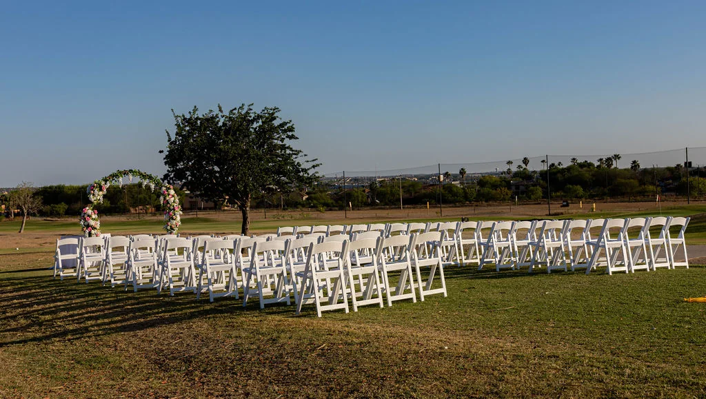

Portafolio
Bodas
Momentos grandes, detalles pequeños y todo lo que se sintió entre ambos.
← Volver al portafolioAB Photography · South Texas

Portafolio
Momentos grandes, detalles pequeños y todo lo que se sintió entre ambos.
← Volver al portafolioAB Photography · South Texas